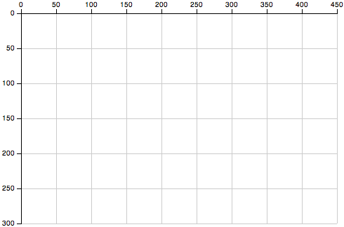
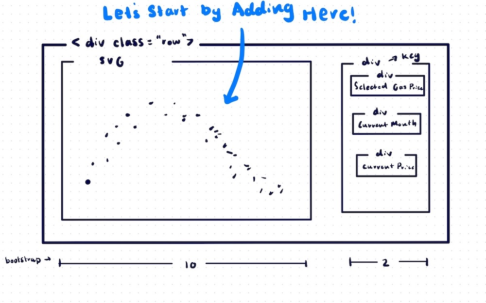

By Medha Bulumulla
The dataset is found here.
You can go to the repository to download or clone the code for this webpage and visualization.
Use the change directory command to go where this folder is located. You can use the cd command like below
cd /Users/medhabulumulla/Desktop/D3-Workshop-SP22
Then run the following command which will open a server so you can display the content correctly. This should bring you to your browser but if not, go here.
python -m http.server
According to the official D3 website, "D3 allows you to bind arbitrary data to a Document Object Model (DOM), and then apply data-driven transformations to the document. For example, you can use D3 to generate an HTML table from an array of numbers. Or, use the same data to create an interactive SVG bar chart with smooth transitions and interaction."
The axis SVG uses isn't the most intuitive way. (0,0) is located at the top left. You should keep this in mind when developing graphs in D3.
These are the D3's scripts so you can use D3's methods.
script src="https://d3js.org/d3.v7.min.js" script src="https://d3js.org/topojson.v3.min.js"
The first link is to a style sheet.
With D3, the CSS might not always work in an external CSS file so I will often use a style tag directly in the html code. But sometimes it's still helpful to have an additional style file.
link rel="stylesheet" type="text/css" href="style.css"
This link is for bootstrap: a package that makes it easier to build responsive sites.
It's a really intuitive package that makes structuring easier. I'd recommend taking a look at it if you want to create your own websites fast.
link rel="stylesheet" href="https://maxcdn.bootstrapcdn.com/bootstrap/3.4.1/css/bootstrap.min.css"
You can take a look at the HTML code through the repository or looking at the Page Source
Here's how I structured the HTML of this visualization.

const g = d3.select("svg#graph");
const k = d3.select("div#key");
I want to have a small margin so I can add the labels of the axis.
const margin = {top: 10, right: 10, bottom:50, left:50};
Retrieve the width and height of g(our svg element) using attr.
const width = g.attr("width");
const height = g.attr("height");
Here I want to use the margins and the dimensions of the svg element to calculate the width and height of the graph/chart. This will make our lives easier below so we don't have to keep doing transformations.
const chartWidth = width - margin.right - margin.left; const chartHeight = height - margin.top - margin.bottom;
Now I create the chartArea, where our graph will actually go according to the calculations above.
let annotations = g.append("g").attr("id","annotations");
let chartArea = g.append("g").attr("id","points")
.attr("transform",`translate(${margin.left},${margin.top})`);
Now I retrieve the gas prices data from the csv using the d3.csv function. Then I print the data into the console using console.log
const gas = await d3.csv("gas-prices.csv");
//Prints gas into the console.
console.log(gas)
The dataset has their months in the format: 1999-01 which refers to January 1999. I want to convert this into a d3 object using timeFormat.You can read more about timeFormat's documentation.
First we're using a forEach loop(similar to a for loop) to iteraate through the data. We create a date object with the parameters of the year amd month.
Then I use my timeFormatting functions to convert it. I create a new column called monthObj which stores the date objects so we can still use the human-readable version later.
const formatMonth = d3.timeFormat("%m");
const formatYear = d3.timeFormat("%Y");
// loop through the data to change them into date objects
gas.forEach((g) => {
currentDate = g['Month'];
dateObj = new Date(currentDate.substring(0,4), currentDate.substring(5,7));
formatMonth(dateObj);
formatYear(dateObj);
g['monthObj'] = dateObj;
So the svg is a specific height and width. I want to create scales that work best for the data and the space allocated to the graph. Below we will be utilizing the data to create scales.
First I run extent which gets the min and max of a dataset. Then I create a scale using scaleLinear. There are other scales which you can learn about in the d3.scale documentation.
The domain of scaleLinear takes in the [min, max] of the dataset which is saved in the extent variables.
The range is what is actually on the computer, aka what we want to see. When thinking about the range, look at the first graphic to make sure you're thinking through the coordinates correctly because it's easy to get confused.
Creating the y axis scale from the price data
// y axis const priceExtent = d3.extent(gas, d => d["Price"] ); const priceScale = d3.scaleLinear().domain(priceExtent).range([chartHeight, 0]);
Creating the x axis scale from the month data
// x axis const monthExtent = d3.extent(gas, d => d["monthObj"] ); const monthScale = d3.scaleTime().domain(monthExtent).range([ 0, chartWidth ]);
You can set color's for specific values. I used this color scheme website to get a discrete color scheme.
Although I wouldn't say using color here is completely necessary given that you can look at the prices using the scale, it adds a nice visual element. There are some datasets where you might want to group specific data pieces together using color where this might be more useful.
const colorScale = d3.scaleQuantile()
.domain(priceExtent)
.range(["#fee087","#fec965","#feab4b","#fd893c","#fa5c2e","#ec3023","#d31121","#af0225","#800026"] );
Here we're going to create the axis based on the scales we made above. We also need to take into account the margins by translating the axis.
I use the calls: d3.axisLeft, d3.axisBottom to create left and bottom axis respectively. Then we append the ticks to the chartArea
// y axis
let leftAxis = d3.axisLeft(priceScale)
let leftGridLines = d3.axisLeft(priceScale)
.tickSize(-chartWidth-10)
.tickFormat("")
annotations.append("g")
.attr("transform",`translate(${margin.left-10},${margin.top})`)
.attr("class", "y axis")
.call(leftAxis);
annotations.append("g")
.attr("transform",`translate(${margin.left-10},${margin.top})`)
.attr("class", "y gridLines")
.call(leftGridLines);
// x axis
let bottomAxis = d3.axisBottom(monthScale)
let bottomGridLines = d3.axisBottom(monthScale)
.tickSize(-chartHeight-10)
.tickFormat("")
annotations.append("g")
.attr("class", "x axis")
.attr("transform",`translate(${margin.left},${chartHeight+margin.top+10})`)
.call(bottomAxis);
annotations.append("g")
.attr("class", "x gridLines")
.attr("transform",`translate(${margin.left},${chartHeight+margin.top+10})`)
.call(bottomGridLines);
Axis Labels
g.append("text")
.attr("x", 300)
.attr("y", 693)
.attr("font-size","20px")
.text("Month");
g.append("text")
.attr("x", -400)
.attr("y", 15)
.attr("transform", "rotate(-90)")
.attr("font-size","20px")
.text("Price");
We are assigning all the circles to the variable, gasBubbles so we can use it for the hover mechanism later.
We are adding circles to charArea by joining the data from gas to set the x and y values.
gasBubbles = chartArea.selectAll("circle")
.data(gas)
.join("circle")
.attr("r", 4)
.style("opacity", .5 )
.attr("cy", d => priceScale(d["Price"]) )
.attr("cx", d => monthScale(d["monthObj"]) )
.attr("fill", d => colorScale(d["Price"] ));
To create the key where we can look at the month and prices of specific data points: we want to add empty elements. We will add information into them when they are hovered but for now they will be empty.
const currentPrice = d3.select("div#currentPrice");
currentPrice.append("text")
.attr("x", 0)
.attr("y", 0)
.attr("id", "priceLabel")
.attr("font-size","25px")
.text(" ");
const currentMonth = d3.select("div#currentMonth");
currentMonth.append("text")
.attr("x", 0)
.attr("y", 0)
.attr("id", "monthLabel")
.attr("font-size","25px")
.text(" ");
We want it so that the opacity, and line around the circle increase when hovered on. We also want the user to see the specific price and month of the data point they're hovering on.
We use the mouseover function and select this(the data) of gasBubbles(look above to see the intialization of this) for the mouseover functionality. This will change the opacity, stroke-width. It will also change the text in the previosuly empty elements to reflect the data.
gasBubbles.on("mouseover", function() {
d3.select(this)
.transition().duration(200)
.attr("r", 5.5)
.attr("opacity", .9)
.attr("stroke-width",2)
.attr("stroke","grey")
.attr("fill", d => colorScale(d["Price"] ));
// change the labels with the correct name
d3.select("#monthLabel")
.text("Date: " + d3.select(this).datum()['Month']);
d3.select("#priceLabel")
.text("Price: $" + d3.select(this).datum()['Price']);
});
We don't want the price data or circle appearance to remain even when the user takes their mouse off the cirle, that would be annoying
Here we're changing it back to what it originally was./p>
gasBubbles.on("mouseout", function() {
d3.select(this)
.transition().duration(100)
.attr("r", 4)
.attr("stroke-width",1)
.attr("stroke","none")
.attr("opacity", .5);
// make the labels empty again
d3.select("#monthLabel")
.text(" ");
d3.select("#priceLabel")
.text(" ");
});
As you can see D3.js has a lot of powerful visualization capabilities. My personal favorite is the fact that things are so customizable and you can utilize data joins to utilize the hover feature.
There's a lot you can do with it and if you want to learn more you should totally take INFO 3300 or look at the D3.js documentation more.